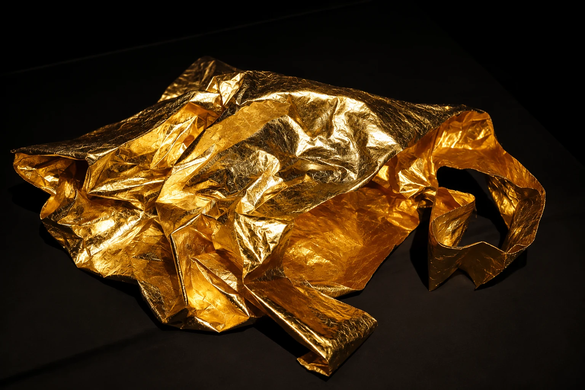
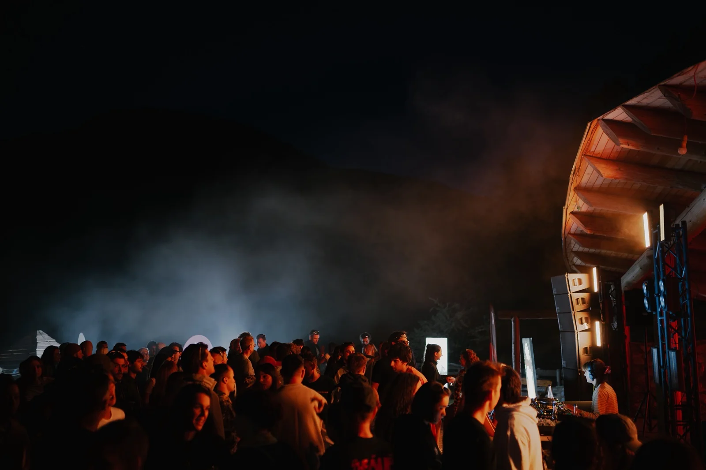
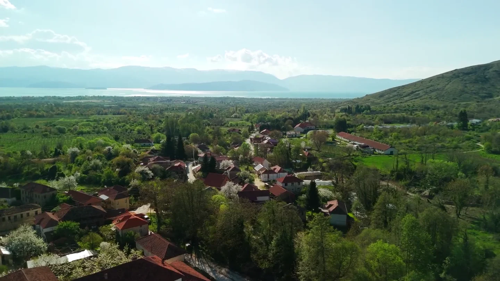
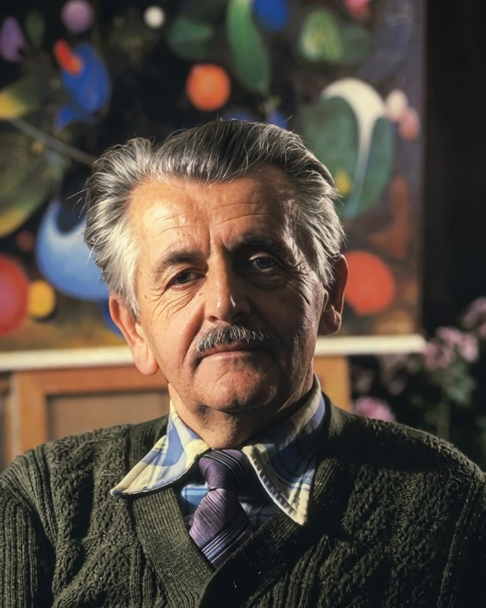
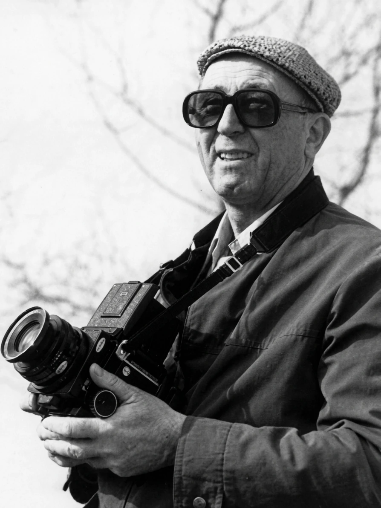
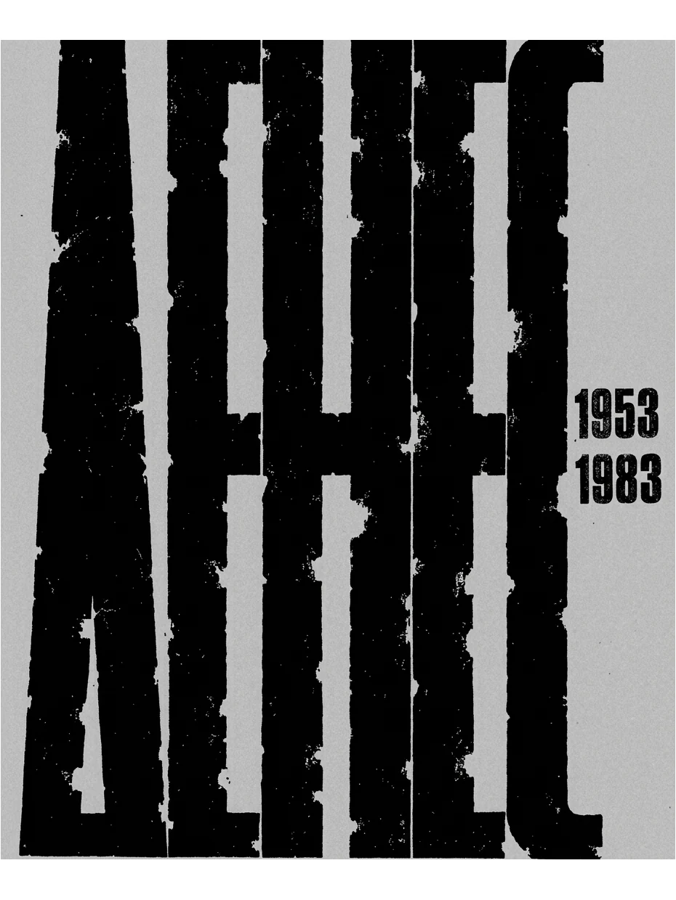
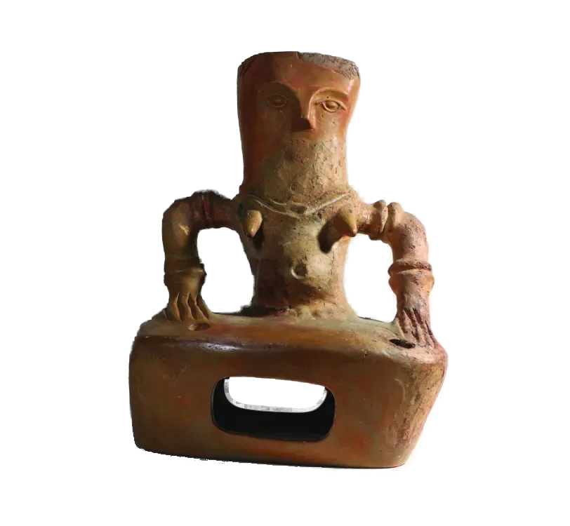
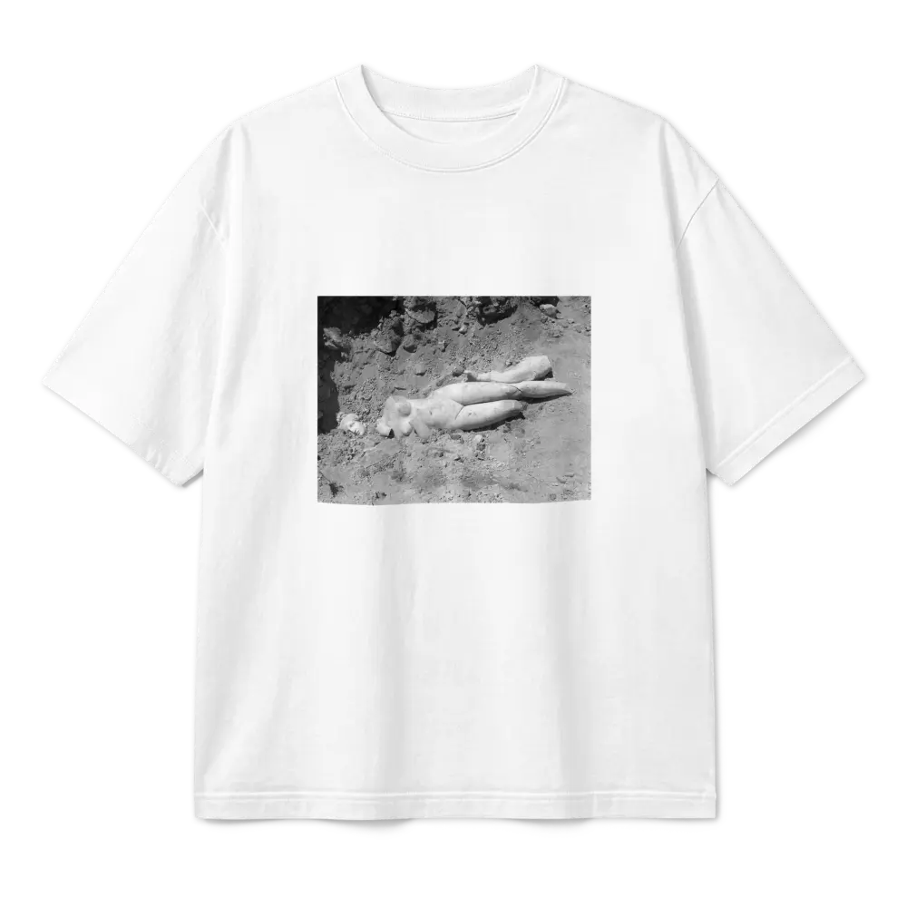

Architecture | Skopje
Tokyo on the Vardar
Kenzo Tange’s plan for rebuilding Skopje after the 1963 earthquake.

Architecture | Skopje

Six modernist buildings in Skopje.
Quality of Life

Ten places to live all year.
Architecture | Skopje
Kenzo Tange’s plan for rebuilding Skopje after the 1963 earthquake.

Music | Macedonia
Independent radio, record labels, and ten recordings from the mid-2020s.


Photographs from Nowhere Somewhere and the 35mm short Absence.
Explore the photographs
She made her museum contract part of the artwork and pressed Skopje to name a bridge after two women.
Explore the works
In 1954, Borka Avramova presented Macedonia’s first solo sculpture exhibition, showing eleven works in Skopje.
Explore the works
A wedding flag, childhood drawings, and the objects Vrencoska brings out of her own archive.
Explore the works
Marble, enlarged needles, and the landscape of Prilep in Monika Moteska’s installations.
Explore the works
At the 2026 Biennale, Zernovski represented Macedonia with a Pietà wrapped in gold emergency blankets.
View the installation
Music | Galičnik
House music from dusk to dawn at a horse ranch in the mountains of Galičnik.
Inside GalikaTrajče Popov, 1955 · Part I
Weekend Guide


Artist | Painting

Artist | Painting

Artist | Painting

Artist | Photography

Art | History

Art | History

Neolithic · Terracotta
Museum of the City of Skopje

Architecture | Ohrid

Literature | History

CineMacedonia

Skopje Venus Tee$29Macedonian culture, in your inbox.